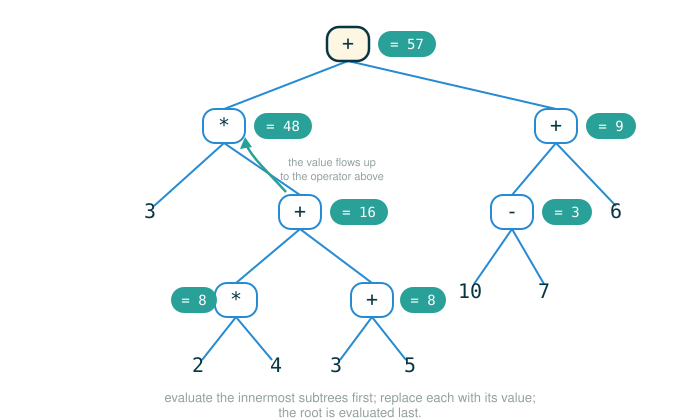

3.2 Scheme Expressions and Evaluation
Chapter 3 changes the question you ask about a program. Until now a program was something you wrote and ran. From here on, a program is also a piece of data that another program can read, take apart, and evaluate. To study that idea cleanly, we switch to a small language from the Lisp family called Scheme.
By the end of this lesson you will be able to do four things. You will read a Scheme call expression written in prefix notation, where the operator comes first. You will trace a nested expression from the inside out, using parentheses rather than precedence to find the boundaries. You will explain why if, and, and or are special forms that do not follow the normal call rule. And you will write the most basic define, both to name a value and to name a procedure.
Scheme looks strange at first because almost every expression is wrapped in parentheses and the operator leads. That strangeness is the point. Scheme has fewer surface rules than Python, so the machinery of evaluation is easier to watch.
Requests Written in a New Grammar
Suppose you are used to ordering food by saying:
two tacos, pleaseThen you walk into a place where every request has to be written on a card in this shape:
(order tacos 2)The request is not harder. The grammar is different. The verb comes first, then the things it acts on, and the whole request is wrapped so the kitchen knows exactly where it starts and stops. Scheme works this way for ideas you already know: numbers, arithmetic, function calls, choices, and names.
In Python you write addition with the operator sitting between the numbers:
2 + 3In Scheme the operator goes in front, and the whole thing is wrapped in parentheses:
(+ 2 3)You read that as "call + on 2 and 3." Placing the operator before its operands is called prefix notation, and once you accept it, a great deal of guesswork disappears.
Why Scheme Belongs in This Course
The original text introduces Scheme as a high-level language that encourages a functional style of programming. We are not switching because Python is weak. We are switching because a smaller language makes the rules of interpretation visible, which is exactly what Chapter 3 is about.
The subset of Scheme in this chapter has three properties worth naming up front.
| Property | What it means here |
|---|---|
| Built from expressions | Nearly every piece of code computes a value; there is almost nothing that only performs an action. |
| Symbolic computation | The language is comfortable treating symbols and lists as data, which is why programs can later be treated as data. |
| Immutable values | Once a value such as a number or a list is built, we make new values rather than changing the old one in place. |
Contrast that with Python, which mixes two kinds of code:
expression: 2 + 3
statement: x = 2 + 3An expression computes a value. A statement carries out an action, such as binding a name. The Scheme in this chapter leans almost entirely on the expression side, and that lean is what keeps the evaluation rules small enough to study.
The Shape of a Call Expression
A Scheme call expression, which the original text also calls a combination, has this general shape:
(operator operand-1 operand-2 ...)The opening parenthesis tells the interpreter that a combination is beginning. The first expression after it is the operator, which should evaluate to a procedure, Scheme's word for a function-like value. The remaining expressions are the operands, which are evaluated to produce argument values. The closing parenthesis tells the interpreter where the combination ends.
The rule for evaluating one of these is the same core rule you learned for Python calls: first the operator and operand expressions are evaluated, and then the procedure that is the value of the operator is applied to the arguments that are the values of the operands.
Here is the first official example, integer division:
(quotient 10 2)Walk the tokens of that one line.
(quotient 10 2)
├─ ( ............ begins the combination
├─ quotient .... operator: names the built-in integer-division procedure
├─ 10 .......... first operand: evaluates to the number ten
├─ 2 ........... second operand: evaluates to the number two
├─ ) ........... ends the combination
└─ evaluates to 5The procedure named quotient receives the arguments 10 and 2, and integer division of ten by two is five.
A Warm-Up Before the Nesting Gets Deep
Before the official nested example, build the habit on something tiny. In Python you would write:
2 + 3 * 4and rely on the rule that multiplication happens before addition. Scheme refuses to make you remember precedence. You say exactly what you mean by where you put the parentheses:
(+ 2 (* 3 4))Walk the tokens.
(+ 2 (* 3 4))
├─ ( ........... begins the outer combination
├─ + ........... operator: the addition procedure
├─ 2 ........... first operand: the number two
├─ (* 3 4) ..... second operand: an inner combination, twelve
├─ ) ........... ends the outer combination
└─ evaluates to 14The operand (* 3 4) is itself a call expression, so it must be evaluated first, to 12, before the outer + can add 2 and 12. Notice that you never consulted a precedence table. The parentheses did that job.
Prefix Notation as a Tree
Now the official example. In Python the expression below leans on precedence and on a pair of parentheses to fix the order:
3 * 5 + (10 - 6)Scheme writes the same computation with every operator's operands made explicit:
(+ (* 3 5) (- 10 6))Walk the tokens of the outer line.
(+ (* 3 5) (- 10 6))
├─ ( ........... begins the outer combination
├─ + ........... operator: the addition procedure
├─ (* 3 5) ..... first operand: an inner combination, fifteen
├─ (- 10 6) .... second operand: an inner combination, four
├─ ) ........... ends the outer combination
└─ evaluates to 19Each operand is itself a combination, so the structure is really a tree. The outer operator + sits at the top, and its two operands hang below it as their own little trees:
+
/ \
* -
/ \ / \
3 5 10 6The interpreter works from the inside out:
(* 3 5) -> 15
(- 10 6) -> 4
(+ 15 4) -> 19The mental model that matters is that parentheses mark exact sub-expression boundaries. The interpreter never has to guess where the multiplication ends and the addition begins. The parentheses show it.
Expressions Can Span Several Lines
A combination does not end until its parentheses close, so the interpreter ignores line breaks inside it. That lets a long expression be laid out in a readable vertical shape. Here is the nested example from the original text, with its exact indentation:
The figure below traces this deeply nested expression as it collapses from the inside out to 57.

(+ (* 3
(+ (* 2 4)
(+ 3 5)))
(+ (- 10 7)
6))Do not try to read it all at once. Read the outermost layer first. It is an addition of two operands:
(+ left-part right-part)The left part is everything in the first big group:
(* 3 (+ (* 2 4) (+ 3 5)))The right part is the second group:
(+ (- 10 7) 6)Now collapse the small pieces from the inside out:
(* 2 4) -> 8
(+ 3 5) -> 8
(+ 8 8) -> 16
(* 3 16) -> 48
(- 10 7) -> 3
(+ 3 6) -> 9
(+ 48 9) -> 57That slow collapse is the skill this section is really teaching. Find the matching parentheses, identify the operator, evaluate each operand, and only then apply the operator. Indentation helps a human eye, but the parentheses are what determine the grouping.
Primitive and Combined Expressions
Scheme expressions come in two kinds. A primitive expression is already a basic value or name and needs no further breaking down:
3A combined expression is built from smaller expressions inside parentheses:
(+ 1 2)For the combined case, the normal call rule applies, and it is exactly the rule stated earlier.
1. Evaluate the operator expression.
2. Evaluate the operand expressions.
3. Apply the operator's value to the operands' values.For (+ 1 2), the operator + evaluates to the addition procedure, the operands 1 and 2 evaluate to the numbers one and two, and applying addition to them produces 3.
Comparisons and Boolean Values
Comparison operators also use prefix notation. Here is the official comparison example:
(>= 2 1)Walk the tokens.
(>= 2 1)
├─ ( ........... begins the combination
├─ >= .......... operator: the "greater than or equal" comparison
├─ 2 ........... first operand
├─ 1 ........... second operand
├─ ) ........... ends the combination
└─ evaluates to #tTwo is greater than or equal to one, so the result is the boolean true. Scheme writes the two boolean values like this:
#t or true
#f or falseYou will use comparisons constantly as the test inside an if, so it helps to read them out loud: (>= 2 1) is "is two greater than or equal to one," and the answer is yes.
Special Forms: When the Normal Rule Does Not Apply
Some expressions are written like combinations but deliberately break the normal call rule. The original text calls these special forms. The defining trait is that a special form does not have to evaluate all of its sub-expressions. It has its own rule.
The first special form is if, whose general shape is:
(if <predicate> <consequent> <alternative>)The words in angle brackets are placeholders, not literal Scheme you type. The <predicate> is the test. If it evaluates to a true value, the interpreter evaluates the <consequent> and returns its value; otherwise it evaluates the <alternative> and returns that. The crucial part is that only one of the two branches is ever evaluated.
Here is a concrete if. Walk its tokens.
(if (> 5 2) 10 20)(if (> 5 2) 10 20)
├─ if .......... special form: choose one branch by a test
├─ (> 5 2) ..... predicate: evaluates to #t
├─ 10 .......... consequent: evaluated only when the predicate is true
├─ 20 .......... alternative: skipped when the predicate is true
└─ evaluates to 10Because the predicate is true, the interpreter evaluates 10 and never touches 20. If if were an ordinary call, it would evaluate all three of (> 5 2), 10, and 20 before deciding, and that eagerness would wreck many programs you will write later. In a recursive procedure the unused branch often contains a recursive call that must not run once the base case is reached. The special-form rule for if is what keeps that recursive call from firing.
The boolean operators and and or are also special forms, and not is an ordinary procedure-like operator on a single value. Their general shapes are:
(and <e1> ... <en>)
(or <e1> ... <en>)
(not <e>)What makes and and or special is short-circuit evaluation. They check their expressions from left to right and stop as soon as the answer is settled. For and, if any expression evaluates to false, the whole and is false and the remaining expressions are not evaluated. For or, if any expression evaluates to a true value, that value is returned as the value of the whole or and the remaining expressions are not evaluated.
Here is an and over two comparisons. Walk its tokens.
(and (> 4 2) (< 3 5))(and (> 4 2) (< 3 5))
├─ and ......... special form: true only if every operand is true
├─ (> 4 2) ..... first operand: #t, so keep checking
├─ (< 3 5) ..... second operand: #t, the last operand
└─ evaluates to #tHere is an or, which can stop after the first true operand.
(or (= 3 4) (> 10 2))(or (= 3 4) (> 10 2))
├─ or .......... special form: true if any operand is true
├─ (= 3 4) ..... first operand: #f, so keep checking
├─ (> 10 2) .... second operand: #t, so stop here and return it
└─ evaluates to #tAnd not, which simply flips a single truth value.
(not (= 3 4))(not (= 3 4))
├─ not ......... flips its single operand's truth value
├─ (= 3 4) ..... operand: three is not four, so #f
└─ evaluates to #tThe Basics of define
So far every expression has computed a value and thrown it away. To keep a value around and reuse it, you give it a name with the define special form. In its simplest shape, define binds a name to a value:
(define <name> <value>)This is a special form, not a normal call, because the <name> must not be evaluated. You are not asking for the current value of pi; you are declaring what pi should mean. Here is the official example.
(define pi 3.14)Walk its tokens. The final row gives the action, because a definition performs an action rather than producing a value to print.
(define pi 3.14)
├─ define ...... special form: bind a name to a value
├─ pi .......... the name being defined (not evaluated)
├─ 3.14 ........ the value expression, evaluated to 3.14
└─ action: binds the name pi to 3.14 in the current environmentOnce a name is bound, you can use it like any other expression. Using pi in a combination evaluates to the value it was bound to:
(* pi 2)(* pi 2)
├─ ( ........... begins the combination
├─ * ........... operator: the multiplication procedure
├─ pi .......... first operand: looks up pi, finds 3.14
├─ 2 ........... second operand: the number two
├─ ) ........... ends the combination
└─ evaluates to 6.28The name pi is not the value. It is a label that points to 3.14, and when pi appears as an operand the interpreter looks up that binding and uses the value it finds.
define has a second shape that creates a procedure in one step. This is the form you will use constantly once Scheme procedures arrive in full. The next packet in this section goes much deeper into defining procedures; here the two procedures below are a gentle preview, not a mastery target, and the goal is only that you can bind a name to a procedure and read a body that uses if.
(define (<name> <formal parameters>) <body>)Here the thing right after define is itself a parenthesized list: the procedure's name followed by its parameter names. The <body> is the expression that runs when the procedure is called, with the parameters standing in for the arguments. The official absolute-value procedure uses this shape together with the if special form:
(define (abs x)
(if (< x 0)
(- x)
x))Read it as a definition whose body is a single if. The parameter is x. The predicate (< x 0) asks whether x is negative. If it is, the consequent (- x) negates x to make it positive; otherwise the alternative is just x itself. Once this is defined, the original text shows the call:
> (abs -3)
3Tracing that call shows both the procedure form and the if special form working together. Applying abs to -3 binds x to -3, then evaluates the body:
(< x 0) -> (< -3 0) -> #t predicate is true
(- x) -> (- -3) -> 3 evaluate the consequent only
(abs -3) -> 3 the call returns 3The alternative branch x is never evaluated, which is exactly the special-form behavior of if.
A second official procedure, average, uses the same definition shape with two parameters and no if:
(define (average x y)
(/ (+ x y) 2))The body divides the sum of x and y by 2. The original text shows the call:
> (average 1 3)
2Tracing it, the arguments bind x to 1 and y to 3, and the body computes from the inside out:
(+ x y) -> (+ 1 3) -> 4
(/ 4 2) -> 2
(average 1 3) -> 2These two procedures are your first complete define examples. The next packet in this section goes much deeper into defining procedures, lambda, and scope; here the goal is only that you can bind a name to a value, bind a name to a procedure, and read a body that uses if.
A Short Modeling Aside
Short-circuit evaluation is not unique to Scheme. Python's and and or stop early in the same way, which makes Python a convenient place to watch the behavior. The next block is a Python model of the idea, not Scheme. It is here only to make the left-to-right stopping rule concrete.
# (1)
def record(value, label):
print("checking", label)
return value
print(record(False, "first") and record(True, "second"))
print(record(True, "third") or record(False, "fourth"))
The expected output is:
checking first
False
checking third
TrueThe skipped labels are the lesson. In the first line, Python never checks "second" because and already knows the result is false once the first operand is false. In the second line, Python never checks "fourth" because or already knows the result is true once the first operand is true. Scheme's and and or follow the same left-to-right stopping rule, and so does the way if evaluates only its chosen branch.
⚠Common Beginner Traps
Reading Scheme left to right like English. In (+ (* 3 5) (- 10 6)) the first visible symbol is +, but the multiplication and subtraction operands have to be evaluated before the outer addition can happen. Read the tree, not the line.
Treating every parenthesized expression as a normal call. if, and, or, and define are special forms with their own rules. Most importantly, they do not promise to evaluate every sub-expression. If you assume if evaluates all three sub-expressions, you expect the unused branch to run, and in a recursive procedure that means the base case never stops the recursion.
Forgetting that the operator comes first. Python writes 2 + 3. Scheme writes (+ 2 3). When you translate, move the operator to the front and wrap the whole call in parentheses.
Expecting a define to print a value. A definition performs an action, binding a name. It does not produce a value the way (* pi 2) does.
Losing track of matching parentheses. Indentation is for human readers. The parentheses are what determine the grouping, so when an expression misbehaves, count them.
✓Check Your Understanding
- In
(quotient 10 2), which token is the operator, and what does it name? - Evaluate
(* (+ 2 4) (- 8 3))from the inside out. What value does each inner combination produce, and what is the final value? - In
(+ (* 3 5) (- 10 6)), which expressions must be evaluated before the outer+can be applied, and what is the final value? - Why is
ifa special form rather than an ordinary call expression? - What does it mean for
andororto short-circuit, and what does each one return when it stops? - What is the difference between
(define pi 3.14)and(* pi 2)in terms of what each one does?
Show the answers
- The operator is
quotient; it names the built-in integer-division procedure that is applied to10and2, giving5. - The inner combination
(+ 2 4)produces6and(- 8 3)produces5; the outer*then multiplies them to30. - Both
(* 3 5)and(- 10 6)must be evaluated first, to15and4; the outer+then adds them to19. - Because
ifevaluates only the selected branch. An ordinary call would evaluate all of its operands before applying the operator, which would defeat the purpose of choosing a branch. - It means the form stops as soon as the result is settled, checking operands left to right.
andreturns false at the first false operand;orreturns the first true value it finds. (define pi 3.14)performs an action: it binds the namepito the value3.14and prints nothing.(* pi 2)is an expression: it looks uppi, multiplies by2, and evaluates to6.28.
§Summary
Scheme programs are built from expressions. A primitive expression is already a value or a name; a combined expression, or combination, is written in prefix notation with the operator first, then its operands, all inside parentheses. The interpreter evaluates a normal combination by evaluating the operator and the operands and then applying the operator's procedure to the operands' values, which means nested expressions are read from the inside out along the tree the parentheses define. Special forms break that rule on purpose: if evaluates only the branch its predicate selects, and and and or stop as soon as the result is known. The define special form binds a name, either to a value with (define <name> <value>) or to a procedure with (define (<name> <formal parameters>) <body>). The central skill for this section is to stop reading Scheme as a flat line of text and start reading it as a tree of expressions whose boundaries the parentheses make exact.
▶Step-Through Checkpoint
The block below is a self-contained Python model of the lesson's core idea: an interpreter evaluating a small expression tree, with names bound in an environment and if handled as a special form. This model uses a couple of tools you have not formally met yet (a function that calls itself, and lambda); you do not need to understand how they work to follow the trace. Just watch which expressions get evaluated and which get skipped. Stepping through it draws the environment diagram the recursion builds: the interpreter calls scheme_eval once for each node of the tree (each call is one running copy of the function), every copy points at the single global env dictionary mapping 'pi' to 3.14, and the PROCEDURES table holds the lambda objects that each combination (operator) node applies, while leaf calls just return a number or look up a name in env and apply no procedure at all. Before you step through it, write down three predictions: how many scheme_eval frames open while the second print line runs, whether 100 ever gets a frame of its own, and what the last line prints.
# (2)
def scheme_eval(expr, env):
if isinstance(expr, (int, float)): # a primitive number
return expr
if isinstance(expr, str): # a name: look it up
return env[expr]
operator = expr[0]
if operator == 'if': # special form: one branch only
_, predicate, consequent, alternative = expr
if scheme_eval(predicate, env):
return scheme_eval(consequent, env)
else:
return scheme_eval(alternative, env)
args = [scheme_eval(operand, env) for operand in expr[1:]]
return PROCEDURES[operator](*args) # normal call: apply to args
PROCEDURES = {
'+': lambda a, b: a + b,
'*': lambda a, b: a * b,
'-': lambda a, b: a - b,
'<': lambda a, b: a < b,
}
env = {'pi': 3.14}
print(scheme_eval(['*', 'pi', 2], env)) # models (* pi 2)
print(scheme_eval(['+', ['*', 3, 5], ['-', 10, 6]], env)) # models (+ (* 3 5) (- 10 6))
print(scheme_eval(['if', ['<', 1, 0], 100, 200], env)) # models an if
Step through it one line at a time and check each prediction as the frames appear. You should see scheme_eval open one frame per node of the tree, seven in all for the second line, with the name pi resolved by looking it up in env. On the last line the predicate is false, so the if case evaluates only the alternative: 100 never gets a frame, and the line prints 200. The unused branch is never touched, which is exactly the special-form behavior this lesson is about.